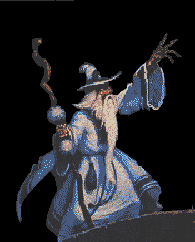

**************************************************** * GODFIELD CYBER GRIMOIRE INTERFACE v0.99 * * --- DO NOT DISTURB THE MATRIX --- * ****************************************************


⚡ WELCOME, TRAVELER OF THE CODESTREAM ⚡
You have entered a forgotten corner of the internet where HTML is not code… it is spellcraft.

✦ CYBER WIZARD STATUS ✦
|
☉ Mana Level: OVERCLOCKED ☉ Dial-Up Spirit: ACTIVE ☉ Firewall Sigils: ENGAGED ☉ HTML Sorcery: MASTERED |
/\ ⚡ /\
/ \ CYBER MAGIC / \
/____\ AWAKENS /____\
(______) (______)
⚠ SYSTEM MESSAGE ⚠
A corrupted packet has entered your browser reality stream. Proceed only if you accept the consequences of nostalgic overload.

📜 LAWS OF THE OLD WEB 📜
- No site shall exceed 800x600 blessed resolution
- Every homepage must contain at least one blinking element
- Under construction GIFs are sacred artifacts
- Guestbooks are portals to other dimensions
🔮 ENTER THE GUESTBOOK CURSE 🔮
Sign here and your message will be etched into the eternal archive... (Warning: some users report their modem slowing after signing)
SIGN GUESTBOOK🌐 WEBRING OF FORGOTTEN SITES 🌐
[ Prev Site ] --- [ Random ] --- [ Next Site ]
🎵 BACKGROUND SOUND SPIRIT 🎵
(if this were 1999, a MIDI would be playing right now)